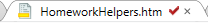
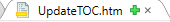
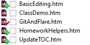
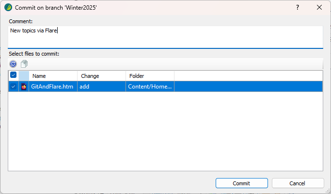

MadCap Flare has an integration with Git built in.
If you open a project that is inside of a cloned Git repository,
|
 |
Files with a red check mark indicate that the file has changed and needs to be committed. |
|
 |
Files with a green plus sign indicate that it's a new file to be added. |
Both of these can be seen in the content explorer as well:

Select File > Source Control > Add.
Provide a Comment and confirm the correct set of files is selected.

Click Commit.